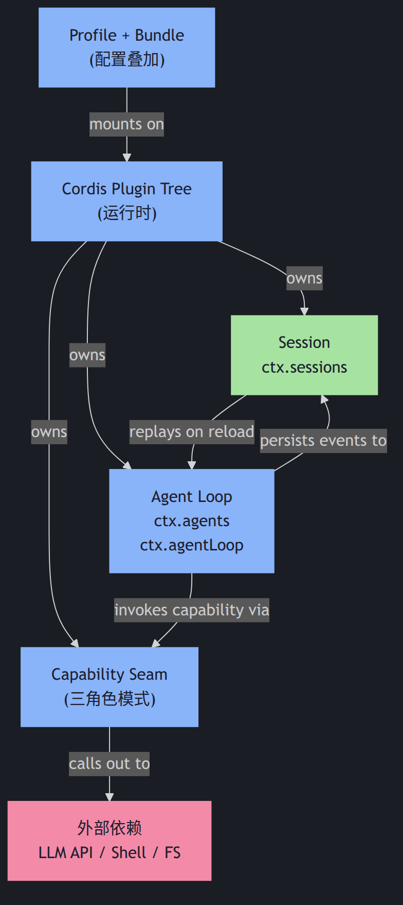
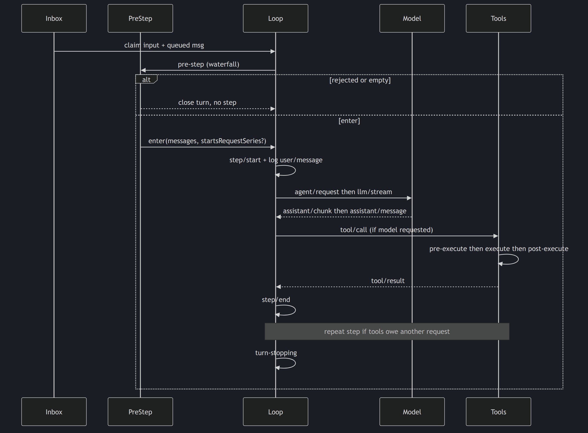
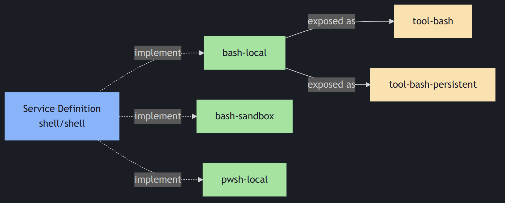

name + description + file_indices。

类比: 像 Spring 的 ApplicationContext,但一切都是 effect——可逆、可回滚。
描述(100 词): Cordis 是 Koishi / Satori 生态的轻量级 IoC 容器,在 DeepSeek Harness 中作为底层运行时。每个 plugin 挂载时注册 service、event、effect 到 ctx。卸载时所有 effect 自动反向,资源自动释放。Plugin tree 支持 fork / merge,允许"spacetime composability"——按时间和空间维度组合。Cordis 不是 dsh 的一部分,而是 vendored(vendor/cordis/)后重新作用域化为 @deepseek-ai/cordis。所有 dsh 包把它作为 peerDependency。
关键文件:
vendor/cordis/,docs/cordis-primer.md,docs/cordis-tutorial/
ctx 键: 无(plugin tree 本身)
docs/cordis-primer.md 入门)// 1. 注册 service
ctx.effect(() => {
const service = createSomething();
ctx.set('myService', service); // ctx.myService 可用
return () => service.dispose(); // 卸载时自动调用
});
// 2. 监听 event
ctx.on('session/event', (event) => {
console.log('Got event:', event);
});
// 3. Waterfall listener(必须调 next)
ctx.on('agent/pre-step', async (decision, next) => {
if (decision.messages.length === 0) {
return { ...decision, rejected: true }; // 拒绝这一轮
}
return await next(decision); // 委托下一棒
});类比: 像数据库的 WAL(Write-Ahead Log),append-only 不可变。
描述: Session 是 dsh 的"事实之源"。所有 SessionEvent(user/message、assistant/*、tool/*、turn/*、step/*)都被 append 到 session log,既是 内存查询的源,也是 模型重放的源。SQLite 后端,schema version 单调,旧格式直接拒收(不写兼容层)。这保证了"Model-visible ⟺ logged"不变量——任何到达模型请求的内容都能从 log 重建。
关键文件:
packages/core/session/src/index.ts,
packages/core/session/src/store.ts,
packages/core/session/src/project.ts
ctx 键: ctx.sessions
docs/architecture.md)| 事件域 | 例子 | 何时用 |
|---|---|---|
| Session | session/event + 各种 SessionEvent | 事实需跨 reload 保留 |
| Agent | agent/inbox、agent/step、agent/request | 观察 / 拦截 in-flight 工作 |
| Capability | fs/*、tools/*、telemetry/* | 不 import loop 也能附加 policy / adapter |
类比: 像 React 的 render loop——每 step 重新组装 prompt + 调 LLM + 跑工具,但驱动是 event-driven 而不是 callback-based。
描述: Agent 是 Agent interface 的实现,由 core/agent 定义,默认驱动由 core/agent-loop 实现。一个 turn = 0 或多个 step;一个 step = 1 次模型请求 + 它调用的所有 tool。每步通过 agent/pre-step 决定要喂给模型的输入,通过 agent/request 发起模型调用,通过 tools/pre-execute 守卫工具执行,通过 tools/execute 实际执行,通过 agent/turn-stopping 决定是否结束 turn。所有这些都是 waterfall listener(必须调 next())或 serial listener(无 next())。
关键文件:
packages/core/agent/,
packages/core/agent-loop/,
docs/agent-lifecycle.md,
docs/subsystems/core.md
ctx 键: ctx.agents(注册表)+ ctx.agentLoop(默认驱动)
docs/architecture.md)
类比: 像 Java SPI 或 OSGi service layer——但每个 seam 必是完整的"三角色",缺一不可。
描述: DeepSeek Harness 的所有能力(LLM / Shell / FS / Web / Subagent / Compaction / Workflow)都遵循同一个模式——一个 seam 必包含 3 角色:Service Definition(接口契约)、Service Provider(具体实现,可插拔多个)、Consumer(使用方,通常是 tool)。Seam 完整才是合法的;只有一两个角色 = 不完整。这强制了"扩展点而非循环改动"的哲学——加新能力 = 加新 seam;改旧能力 = 改 Provider,不动 Definition。
真实例子:
llm/llm(Definition)+ llm-deepseek / llm-pi-ai(Provider)+ core/tools(Consumer)shell/shell(Definition)+ bash-local / bash-sandbox / pwsh-local(Provider)+ tool-bash / tool-bash-persistent(Consumer)web/web(Definition)+ web-search / web-fetch(Provider)+ tool Consumer关键文件: docs/capability-seams.md(专门定义),docs/glossary.md#capability-seam

类比: 像 Docker 的多层镜像——bundle 是层,profile 是组合。
描述: 一个运行的 dsh = 启动时由若干层叠加而成的 plugin tree。Profile是命名组合,存储在 Harness home,列出它堆叠的 bundles + 用户的 cordis.patch.yml。Bundle是 Cordis config rows 的发行格式 + 它们 mount 的代码。叠加顺序固定:profile.bundles[i] → profile.patch.yml → home.patch.yml → --patch overlay。Live patch reload 用于 web profile;headless/sdk/sdk-minimal/acp 在启动时只应用一次(替换运行时依赖会作废一次性应用的生命周期)。
关键文件:
packages/bundle/(base/web-app/headless/sdk-app/acp-app/sdk-minimal),
packages/boot/app-boot/,
docs/architecture.md#profiles-and-bundles
ctx 键: 无(boot-time 配置)
| 维度 | Profile | Bundle |
|---|---|---|
| 是什么 | 命名组合 | config rows + 代码 |
| 存在哪里 | Harness home(用户级) | npm 包(代码级) |
| 声明字段 | dsh.profile(列 bundles) | dsh.bundle(指 patch file) |
| 可被 patch 吗 | 是(cordis.patch.yml) | 是(上层 bundle 或 patch) |
| 例子 | web、headless、sdk、acp | dsh-base、dsh-web-app |
| From | To | Label |
|---|---|---|
| Cordis | Session | owns(挂载) |
| Cordis | Agent | owns(挂载) |
| Cordis | Seam | owns(挂载) |
| Profile | Cordis | mounts on(启动时叠加) |
| Agent | Session | persists events to |
| Agent | Seam | invokes capability via |
| Seam | External | calls out to(LLM API / Shell / FS) |
| Session | Agent | replays on reload(冷启动恢复) |
不变量: 5 个抽象都参与至少 1 个关系(PocketFlow 要求)。